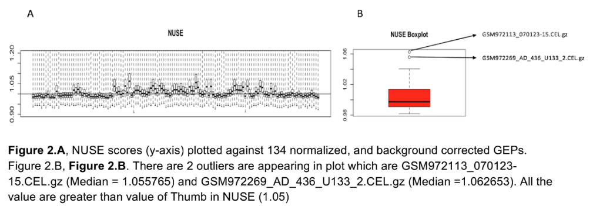
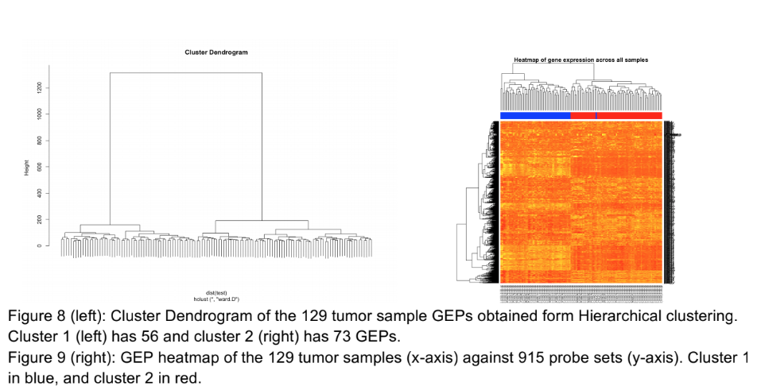

Project Writeup Instructions
Your reports should be focused on describing what you did and any relevant background. The purpose of our projects is to attempt to reproduce the findings in a published manuscript. You do not need to restate any of the methods from the paper itself; only what you yourself did in pursuit of reproducibility. The introduction should include a brief discussion summarizing the premise of the original study, just to give the reader enough context to understand the results.
Projects are due by adding and pushing your report document to your github repos prior to the start of class on the day the project is due! The project will be discussed on the due date, so no late assignments can be accepted. If you have trouble pushing the document, you may email it to the instructor and your TA instead.
Report Guidelines
Your reports will be assessed in six areas:
You will be provided with detailed feedback on each of your reports with specific comments on each of these areas. Your final grade will be assigned based on how well you respond to the comments for your projects overall.
FAQ
How do you assign grades in this class?
The feedback we give is intended to help you improve your writing, critical thinking, and biological/bioinformatic reasoning skills. We therefore want you to focus more on the content of the feedback than the grades of each project. For this reason, our feedback will specify the range of grade you would receive at the end of the course based on the quality of each report.
The only guaranteed ways to get a lower grade is to not follow the instructions in the project descriptions, or not incorporating feedback you received on previous projects.
What happens if I don’t get results like those in the paper?
We are not assessing your reports based on whether you replicate the results or not! We are looking for your process. If your analysis results look nothing like what was reported in the paper, but you describe those results accurately and reason about why they were different, that is all I’m looking for. There is never one “right way” to do these studies, and in any case your results will almost never match those reported precisely. Use your reasoning and logic to explain your results, whatever they are.
How should we format our reports?
The report should be roughly similar to that of a published paper, with appropriate section headings, prose, and figures/tables interspersed throughout as appropriate. Be sure to review the writeup instructions below to get an idea of what specifically we will be looking for.
Report Sections Description
Each of these sections should be included in your report.
Introduction
- What is the biological background of the study?
- Why was the study performed?
- Why did the authors use the bioinformatic techniques they did?
Methods
The methods section should concisely describe which steps were taken in the analysis of the data.
How was the data normalized?
How were outliers detected and removed?
What summarization method was used, if necessary?
Overview: Explain the rationale for the method and tools selected to perform each step in the analysis
Briefly describe the algorithms used to analyze the data, with graphical illustrations if necessary
Describe the specific steps, software versions, and parameters to those software packages that were used to process the data
How was the analysis run? How long did it take? What computational resources were required?
Results
The results section presents the primary findings of the study. This should generally be a simple description of the results, and all discussion and interpretation should be reserved for the Discussion section.
- Results from each step in the methods section
- If something failed, explain why you think this happened and suggest alternatives or fixes
- Figures and/or tables describing your results, with descriptive captions
Discussion
Discuss and interpret the results in the larger biological context of the study. Begin with a brief restatement of the primary results, followed by any interpretations and conclusions drawn.
- Briefly summarize the overall method and main findings
- What are the implications of your main findings?
- What biological interpretation do the findings suggest?
- Were you able to reproduce the result from the original paper? If not, why not?
Future Directions
Here’s the fun part, in this section, try to think about what you might do next to extend, follow-up or expand the scope of the original study.
- List at least three additional experiments / questions that would be interesting to address
- Why are these questions interesting? Why would the answers to these questions be relevant?
Challenges
Let’s reflect on which aspects of the project were difficult. For this section only, you may drop the standard tone and style of a publication and write in the 1st person
- What were the main difficulties you encountered in the project?
- These can be computational, biological, or procedural in nature
Report Assessment Guidelines
Your reports will be assessed in the areas described below.
Accuracy
Accurate writing conveys correct information, and is the baseline requirement of good writing. Accuracy relates primarily to the content of what is being described, though incorrect or awkward grammar can obscure otherwise accurate writing. Accuracy involves producing the correct structure and components of a requested body of writing, be it a class assignment with specified plots and results, or a journal article that must have specific sections in a predetermined order.
Common mistakes
- Omitting key components, e.g. sections, plots, tables, etc
- Including incorrect information, or omitting requested information, from plots and tables
- Incomplete description of methods or results
- Poor or awkward grammar that interferes with the reader’s comprehension of the content (also see Clarity of Language and Thoroughness)
Formatting
Clear and consistent formatting is an important aspect of communicating in writing. At worst, inconsistent formatting can interfere with the effectiveness and clarity of your writing, making it difficult to understand. Everything related to how your text, figures, and tables appear visually on the page is formatting, including font, font size, heading and subheading position and size, location and size of figures and corresponding captions, margin widths, use of color, etc. All sections of a document should be consistent in all of these areas. Consistent formatting can take time and effort when incorporating sources from multiple documents/programs. Programs like Microsoft Word often have specific formatting settings that differ between users. One way to ensure consistent formatting is to use a typesetting program like LaTeX, possibly used with an online editor platform like overleaf.com, to separate the content (i.e. text, images, etc) from the layout.
Common mistakes
- Excessive (>1” each) or miniscule (<0.25” each) margins
- Margins should be consistent throughout
- Section heading and subheading levels do not have consistent font weight and size throughout document
- Inconsistent indentation of blocks of text:
- All new paragraphs should have same indentation of first line (may be none)
- Separation (i.e. blank space) between paragraphs should be consistent
- Block quotes, if used, should use identical formatting throughout
- Figures and tables should be centered on the page (or column, if using multiple column layouts), and captions centered immediately below them
- Except in section headings, font decorations like underline or bold should generally be avoided
- Citations referenced from the text should have consistent format (e.g. (McKee 2016), or [1])
Figure & Table Quality
Figures and tables serve various roles throughout your reports. They can show critical data when it would be impractical to describe it, lay out a particularly complicated workflow so that readers can better understand it, or show data in a less biased way so that readers can come to their own conclusions. In general, the reader should be able to go through a section and then see a figure regarding its main point. This is most often important in results and conclusions sections but can be helpful in methods and introduction as well.
Captions are necessary for each figure. They should succinctly provide enough detail so that the reader can understand the figure. Ideally this should be enough so that readers could understand the figure without reading the main body of the text.
If you are not sure if a figure or table should be included simply consider this: Is this critical to a thorough reading of this report? If you find that a figure is an edge case, or would only be useful to those looking for additional information, feel free to include it as a supplemental figure.
Important Features
- Relates directly to text
- Contains necessary information
- Does not contain too much unnecessary information
- Fully labeled and unambiguous
- Clear and succinct captions
- Visually pleasing
Common mistakes
- Extraneous and unexpected information
- Not providing support for claims made in the results or discussion sections
- Unclear or missing labeling
- Use of methodology not explained in the methods section
- Poor choice of color scheme
- Information obscured by legends or other information
- Unreadable text
Examples
Unlabeled axes and a bit too much detail in the caption:

Unlabeled axes and too much caption detail
Text shrunk to the point of being unreadable. The gene names (right y axis of the right image) could have been cut and replaced with a simpler, general axis title. There is no legend to indicate what color is high in the heatmap:

Illegible text
If something looks like this, put it in a table:
{kind=link}
Good use of a figure to explain a method central to the report. More detail or formatting besides the cut and paste would be welcome though:
Figure copied from another website
{kind=link}
Clear use of extra time to make every inch of the figure useful:
{kind=link}
Clarity of Language
The purpose of writing reports is to communicate your findings with your audience. Each sentence should be readable and totally clear. Try not to confuse the reader. Think of each paragraph as a slide in a presentation and answer three questions:
- Why is this important enough to be in your text? How does it add to your story.
- What information are you trying to give to your audience? What is the takeaway sentence.
- How do you support this claim? How did you get this result?
Put yourself into the reader’s shoes. Usually a reader looks at your abstract, then jumps to the results section. Once they find something interesting to them, they will go to methods to make sure about the results and get the details. If the overall work interests them, they will look at your discussion.
The overall flow should be:
- Introduction: Explain any relevant terms you will use in your work. Avoid side tracks, don’t confuse your audience by explaining every detail; just cite papers and if someone wants to learn more they will go and read it.
- Methods: Any details of how you did the work goes into the methods. Give enough information that the reader can understand how to repeat your methods.
- Results: Results follows the flow in the methods. Start each paragraph with a summary sentence, explaining what did you do, why you did it, and what did you find? Follow up with the details and numbers. Refer to tables and figures as needed. Avoid giving the details of the methods, those should go into the methods section. Keep relevant figures and tables that add to your story.
- Discussion/Conclusion: Start by summarizing your work and the most noticable results. Any interpolations or probable outcomes from your results can be discussed here. Difficulties, limitations, and future work are discussed in this section. Do not repeat sentences from the results of methods.
Common mistakes
- Finding synonyms on the web which have more syllabuses and sound harder to pronounce, thinking complexity makes your work seem more sophisticated.
- Long sentences, joined with which, and, or that go on forever.
- Using it/the/she/he constantly without clarifying the reference.
- Abbreviating too much or too little.
- Every figure and table should be referenced in your text.
- When you are not sure, don’t try to scramble around and avoid explaining. It gets worse.
- Keep the same verb tenses throughout the section. We (I) did …. We (I) found that …
- Avoid sentences that bring forward personal bias: I believe, I think
Tips
-
Start by making an outline then extend each bullet to a paragraph.
For example an outline for the introduction section on a paper to study Parkinson disease using miRNA in substantia nigra would be:
- What is Parkinson disease
- The mechanism is unknown
- Why use miRNA?
- Why the tissue substantia nigra?
- What is coming in this paper?
You can read the result here. [Hoss, Andrew G., et al. “microRNA profiles in Parkinson’s disease prefrontal cortex.” Frontiers in aging neuroscience 8 (2016): 36.]
Punctuation helps a lot to make your text more readable.
Read more and more papers. Learn from good examples. Papers published in highly recognized journals are good examples to learn from. After you read the paper to learn the content, read it again, for the language.
Read your own paper as if you were the reader. Try to grade your own work.
When you watch a presentation or read a paper, try to notice when you get confused and what went wrong. Learn from other people�s mistakes.
Good examples
Here the first sentence explains why they did it (To determine whether changes in DNA methylation were associated with changes in gene expression), what they did (we measured transcript levels using mRNA-Seq). Following sentences explain the results:
To determine whether changes in DNA methylation were associated with
changes in gene expression, we measured transcript levels using mRNA-Seq.
Overall, the genes we find to be differentially regulated have a high
degree of overlap (P < 1E-109) with a previous study (27) that used
microarrays (Fig. S1F). Genes that overlap in both studies and decrease in
expression in the STHdhQ111 cells are associated with developmental
processes, neuron migration, regulation of signaling, and regulation of
neural precursor cell proliferation (Dataset S2). Genes that increase in
expression in the STHdhQ111 cells in both our study and the previously
published microarray data are associated with categories including
extracellular matrix organization, signal transduction, and cell
differentiation (Dataset S2). [Ng, Christopher W., et al. "Extensive
changes in DNA methylation are associated with expression of mutant
huntingtin." Proceedings of the National Academy of Sciences110.6 (2013):
2354-2359.]Average Examples
Example 1
Original:
Then a set of Welch T test (with unequal variance) was conducted between
same genes in different clusters, and the p values for the tests were
adjusted with the FDR value. 1000 genes were filtered out to be the most
significant markers for the variances between two clusters. Within these
1000 genes, the analyst did a cross validation with the supplementary
material provided by the original paper. In the supplementary material
there is a table of the logFC data of cancer vs control, the analyst
checked the data and located genes with large differences in the number of
fold changes vs control (for example, genes have large positive value in
logFC in C3 vs Control and have a very negative value in logFC in C4 vs
Control at the same time and vice versa), and check if these genes are in
the 1000 genes located from the adjusted p value filter.Purpose is unclear. Many references are given without prior mentioning. Methods are not clear. The use of the term “cross validation” which is not explained clearly.
Rewritten:
To determine if the genes expression in the detected different patient
clusters have similar distributions, we applied Welch T test on the sample
genes present in different clusters. The top 1000 genes with adjusted
p-value<xxx were selected as the markers for the clusters. We compared
these genes with the fold change values given by authors. [The criteria for
the validation is unclear and should be rewritten]Example 2
Original:
Data was read as CSV format, as comma separated files. Based on Marisa et
al. we selected genes using three well defined metrics and these filters
were applied to the RMA normalized and ComBat adjusted expression matrix
data for this analysis. These filters included; (1) Genes expressed in at
least 20% of the samples with expression values greater than log2(15); (2)
Have a variance significantly different from the median variance of all
probe sets using a threshold of p<0.01 then applying Chi-square statistic;
and (3) genes with a coefficient of variation greater than 0.186.
Additionally, a quantile chi-square test was applied to the dataset with
degrees of freedom (N-1) and alpha level equal to 0.01. All filtering
analysis were done on R version 3.5.1 with built in packages in Rstudio.CSV and R version whatever is too much detail which does not add to the flow (part of accuracy). The text “in at least 20% of the samples” is ambiguous. The expression greater than log2(15), did they mean at least 15 reads? If the normalization method to get the expression values is explained above, remove log2 and just place a number. Rewrite sentences to make the method more clear. Keep all numbers within a reasonable precision (part of accuracy), for example 20% of samples, log2(15), 0.01, 0.186. Why did you choose 0.186?
Rewritten:
Variable genes were selected based on the three variability metrics
suggested in Marisa et. al. First, genes were required to have a minimum of
15 reads in at least xxx samples (20% of all samples). Then, the genes were
filtered based on their variance to ensure they have significantly higher
variance than an average gene. The variance was computed by a chi-square
test. Genes with a coefficient of variation greater than 0.186 at p-value <
0.01 were selected. These genes were used in the downstream analysis.Example 3
Original:
It is interesting to see if any certain feature of a TR, i.e. pattern
length, copy number or annotation would be predictive of VNTRs. In order to
study that, we fitted a generalized regression model (glm) to predict
whether a TR is VNTR, or if any VNTR will become common or hyper.Rewritten:
We constructed generalized linear models to determine whether specific TR
features, e.g., pattern length, copy number, array length, or genomic
annotation, are predictive of VNTR status. Four models were designed, one
to predict whether a TR is a VNTR and three more to predict VNTR subtypes
(private, common, hyper).Thoroughness
Thorough writing fully describes a result or method without providing too much, too little, or extraneous detail. This means describing not only the basic facts or concepts, but also providing sufficient context for a scientifically literate reader who is not intimately familiar with the subject matter to understand them. There is a balance between being descriptive and being concise that takes practice and experience to master.
Common mistakes
Mentioning key terms or concepts without describing what they are
Providing too little or too much detail (examples below)
-
Including tables or figures without sufficient parallel description in the text:
- In the Results section text: briefly describe what the figure/table contains and what the reader should observe about the figure
- In the Discussion section text: describe what the author believes the figure/table means and how that relates to the results of the overall study
- In the Caption text: provide specific details that aid the reader in understanding the figure
Vague or incomplete description of the methods in the Methods section
Vague or incomplete description of the results in the Results section
Vague or incomplete interpretation of the results in the Discussion section
Omitting citations justifying key claims in your text, especially if you say “Previous studies have shown…” etc
Tips
- Make sure each program or method you used is mentioned and describe any key parameter choices (e.g. number of reads for a gene to be included in the study) in the Methods section
- Do not include the specific commands or literal command line arguments (e.g.
--index) in the text; it is sufficient to reference the names of programs/packages and the versions you used - When reading a published work, imagine trying to implement the analysis described in the methods section; do you feel there is sufficient detail included to do so?
- Reread your own Methods section and ask the same question as above
- Make a bulleted list of titles for each of your tables and figures, ordered in a logical progression
- Write a results section that describes the key results and observations from your sequence of tables and figures so that the text flows from one result to the next; it should be clear to the reader why you conducted each experiment based on those described earlier
- Reread your results text without looking at the figures; do you get an accurate understanding of the results from the text alone?
- Make sure you reference each of your figures in the Discussion, connecting the results together to form an overall interpretation
- The last paragraph of your Introduction should have included a statement about what question(s) your work sought to answer; after reading your results and discussion, do you feel you have answered those questions? If not, you should probably be more thorough.
Good example
A methods section from Mandelboum et al 2019, subdivided for clarity:
We analyzed 35 publicly available human or mouse RNA-seq datasets from GEO
[30] (S1 Table). We sought datasets that were (1) published in recent years
(mostly in 2017-18), (2) contained 2-4 replicate samples of each biological
condition, (3) probed treatments with well-documented biological responses
(e.g., TNFa) to ease functional interpretation and recognition of true
calls by GSEA, and (4) collectively covered diverse biological processes.The study design (# of samples, RNA-Seq datasets) is clearly defined, as is the rationale for sample selection.
We downloaded either raw count data files when provided by GEO or,
otherwise, raw sequence fastq files (from SRA DB). In the latter, reads
were aligned to the reference genome (hg19 for Hs and mm10 for Mm) using
TopHat2 [31], and gene count data were generated using FeatureCounts [32].
We calculated cpm levels, and in each dataset analysis, we included only
the expressed genes (defined as those whose expression was at least 1.0 cpm
in all replicate samples of at least one of the biological condition probed
in the dataset).Specific sources of data are mentioned without providing too much detail (GEO or SRA DB). Specific reference genomes are mentioned (hg19, mm10), and published methods are mentioned and correctly cited (TopHat2, FeatureCounts). Appropriate detail is included for the important minimum cpm parameter (1.0 in all replicates of at least one biological condition).
Following this filtering step, gene counts were normalized using six
different normalization methods: RPKM [7], RPKM followed by quantile
normalization [25], TMM [8], RLE [9], RLE followed by RPKM, and UQ
normalization followed by RPKM [11], all implemented in edgeR [33]. cqn and
EDASeq (both available as Bioconductor packages) were applied to expression
count data. Gene-expression FC was either calculated by dividing normalized
expression levels (after adding 1.0 to both numerator and denominator and
averaging over replicate samples in the treatment versus control
comparisons) or estimated by edgeR regression model fit. Gene annotations
were downloaded from GENCODE (v25 for Hs and vM10 for Mm) [34]. For genes
with multiple transcripts, we took the length of the principal transcript
(as defined by GENCODE's annotation of principal and alternative splice
isoforms [APPRIS] annotations [35]) or the length of the longest transcript
if principal transcript is not defined for the gene. All statistical
analyses were performed in R. Statistical significance of Spearman's
correlation was calculated using the cor.test function.Concise language and appropriate citations, inclusion of relevant analysis choice details (e.g. “For genes with multiple transcripts…”) without too much implementation detail.
Average examples
Example 1
Original:
On the GEO (Gene Expression Omnibus) website, the paper has the repository
with accession Number GSE64403. The data was acquired by using the SRA
toolkit. The sample data GSM1570702 was downloaded using the fastq-dump
``--split-files``. The ``--split-files`` is the argument that split the SRA file
into two fastq files.Writing is not concise, too little description of the data, and too much description of the methods.
Rewritten:
Paired end RNA-Seq data for the P0 timepoint sample (Dataset Accession
GSM1570702) was downloaded using SRA toolkit from GEO (Series Accession
GSE64403).Example 2
Original:
The mapping process of the two give FASTQ files containing the RNA-seq
paired end reads needed index files for the barcodes used in the RNA-Seq,
in addition to annotation file of the reference sequence. Due to the
computationally demanding nature of this process, a batch job script was
coded to utilize number of tools available on the Shared Computer Cluster
(SCC) (Table 5):
- Bowtie2: is a package for alignment based on Barrows-Wheeler algorithm,
which allows a margin of mismatch and randomization that reduces the
memory footprint. And therefor it is fast and described as greedy
algorithm. Bowtie is not Reads splice aware [6].
- Tophat v2.1.1: is a splice junction mapper for RNA-Seq reads based on the
aligner bowtie. Its job is to identify splice junctions between exons
(Figure 5).
- Boost v1.58.0 is C++ library for string and text processing.
- Samtools V0.1.19: are tools to view, sort, merge and to get statistics on
alignment files, that are kept in SAM format.Unnecessary general description for methods section, too much implementation detail, Methods text should generally not include bullet points.
Rewritten:
Paired end FASTQ files were aligned against the mm9 reference genome with
Bowtie2[6], followed by spliced alignment with Tophat[citation needed].
Alignment statistics were calculated using samtools.Cohesion & Coherence
A cohesive document is consistent in all aspects throughout. This includes not only formatting, but also grammatical features like tense, voice, and tone, and stylistic characteristics where sentences, clauses, and ideas flow from one to the next. Although many published manuscripts have sections that are written by different people, articles typically (or should) sound as if they were written by one person. Consistency throughout the document makes it easier to read and understand. Beyond consistency of an entire document, cohesive writing flows from sentence to sentence in a logical progression that aids the reader in comprehension. Each sentence or clause should follow logically from the one that came before, and set up the reader for the next to come.
Cohesion and coherence are some of the most difficult writing concepts to master. For more detailed description and discussion of cohesion and coherence, see this excellent post